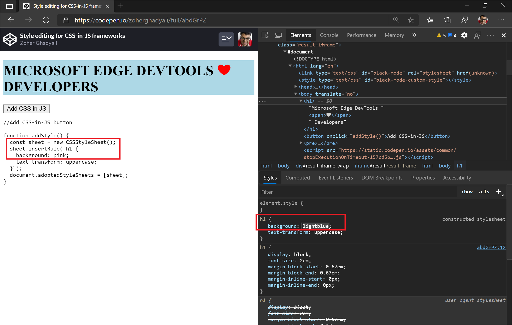
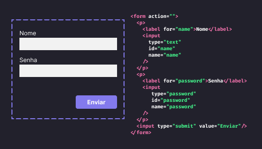

JavaScript é uma linguagem de programação de alto nível, leve e interpretada. É uma linguagem de script com tipagem dinâmica amplamente usada para criar páginas web interativas e dinâmicas. Com JavaScript, você pode adicionar comportamentos complexos e interatividade às suas páginas da web de uma maneira criativa e poderosa.
Exemplo 1: Alteração de Estilos
Um exemplo simples de JavaScript é alterar estilos de elementos HTML dinamicamente. Por exemplo, mudar a cor de fundo de um botão quando o mouse passa por cima.
Exemplo 2: Formulários Interativos
O JavaScript pode ser usado para validar formulários em tempo real, fornecendo feedback imediato aos usuários e evitando envio de dados inválidos.
Exemplo 3: Carrossel de Imagens
Um componente popular em muitos sites é o carrossel de imagens, que exibe várias imagens em uma área. JavaScript é comumente usado para criar e controlar esse tipo de elemento interativo.
Feito por Roger